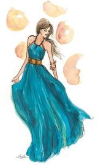
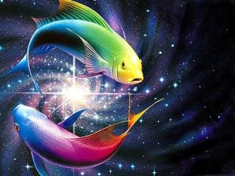

كلمات اغنية يارا ما بعرف
مابعرف كيف بنظرة بتعمل هيكبتاخدنى ليك وبموت عليك

Ты идеальна, ты всегда это знала. Ты как богиня, ты как с обложки журнала. Ты появилась на пляже, с такими ногами.
Её глаза такие синие,Глаза магнит, глаза магнит. На платье распустились лилии. И я убит. Любить обещает, потом забывает.
장미의 미소한두번도 아닌데그대를 만날때면자꾸만 말문이 막혀서담배만 피워댔죠이제야 그대에게사랑한단 말대신한송이 새빨간 장미를두손모아 드려요새빨간 장미만큼그대를 사랑해
I threw a wish in the wellDon't ask me I'll never tellI looked at you as it fellAnd now you're in my way
He said let's get out of this townDrive out of the cityAway from the crowdsI thought heaven can't help me nowNothing lasts forever
Finding your way in the dark, ain't so hard when you're close to my heartYou are there when I'm feeling aloneAll I need is for you to come home
Εχω αντιρρηση να προσπαθησω γνωμη ν'αλλαξειςγεγονοτα οπως πρώτα ψυχραιμα να κοιταξειςΔιχως κατι να σε δενει πλεον αλλο μαζί της
I used to bite my tongue and hold my breathScared to rock the boat and make a messSo I sit quietly, agree politelyI guess that I forgot I had a choice
Син к1ераме гул дела ду.Хаза сюре вай хьура ю.Вай безамаш хоржура бу.Шайна везарг к1астура ву.Вай безамаш хоржура бу.
Wake up to your dreamsAnd watch them come trueI'll make you whisper my name, i'll never leave the roomNight and day, i'll be your muse
Ты спишь, а на улице ветерТы спишь, а на улице дождьЗа наши дела только мы лишь в ответе,Надеюсь, ты это поймешь

Сан Саныч,ты любишь ли рыбные дни?
В созвездии Рыб ты плывёшь под Луной,
Глаза удивлённые пучат они
И крутят хвостом у тебя за спиной.
Пусть небосвод сияет голубой,
Пусть ночь нам дарит россыпи созвездий.
Давай сейчас поднимем тост с тобой
За нашей свадьбы юбилей столетний!
С праздником военным
Поздравляю дядю!
Пусть дела решаются
Быстро и не глядя.
Пусть здоровья хватит
На задумки все,
Сплю теперь по ночам и уже не разбужен звонкамиИ уже не боюсь, потерять иль потерянным бытьМне тебя удалось отпустить, только мучает память
Подари мне листопад, словно легкой шалью,Пусть на плечи упадет осень золотая.Подари мне звездопад, как в волшебной сказке,
Несравненная Нонна!Можно так обратиться?Я влюблён в Вас давно, ноНе решался раскрыться.
Каток, интрига, шум толпыИ вот на лед выходишь ты,Как нимфа в снежном облачении,Нашла свое предназначениеТы здесь…***
Конец апреля, день мог быть обычным,
Но нет. Он подарил нам человека,
И это имя, голос мелодичны –